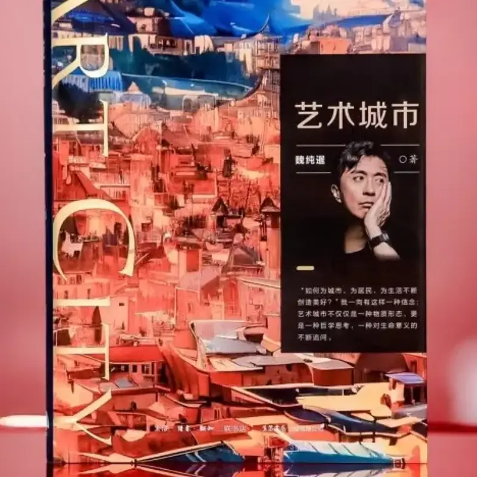
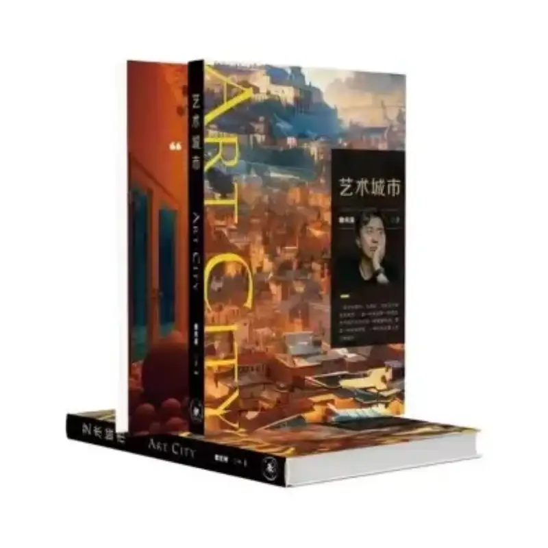
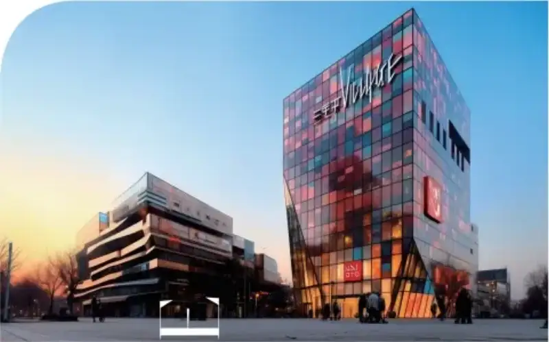
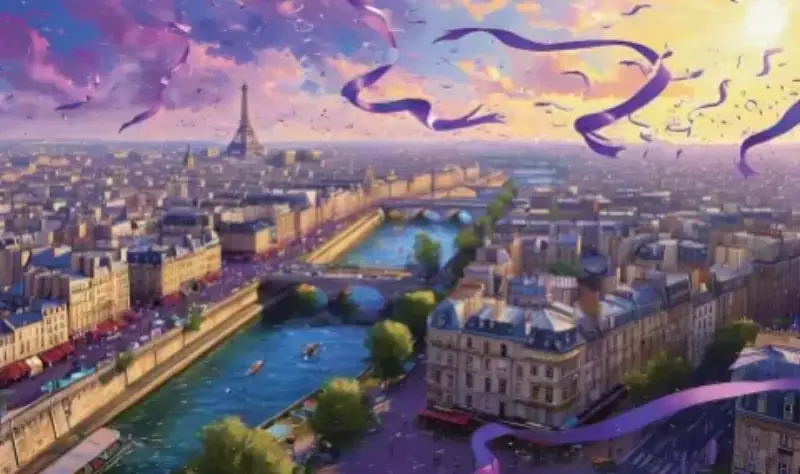
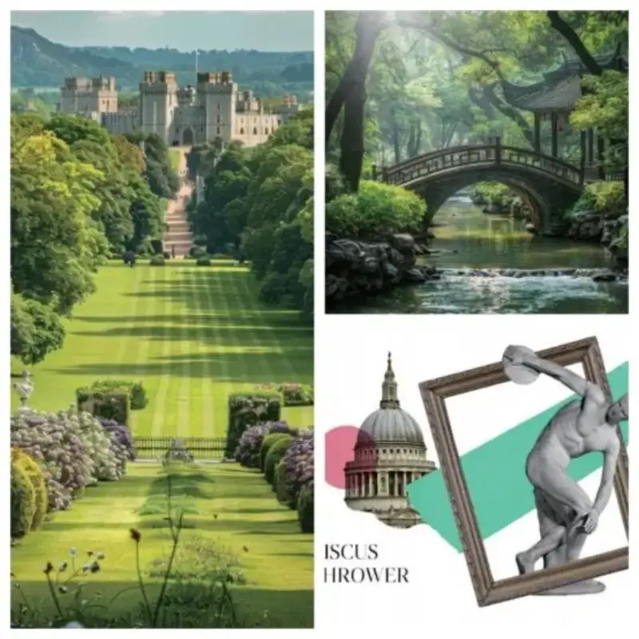
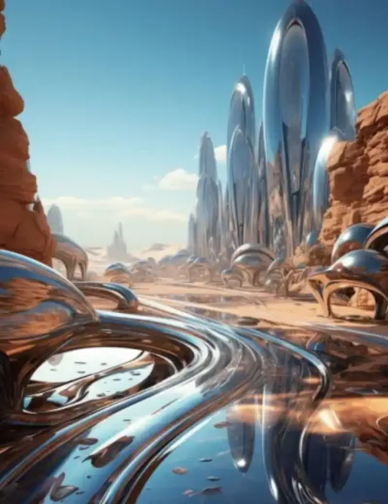

Time flies, and cities change day by day. What should a future city really look like? And how can a city truly keep creating value for its residents and for life? Wei Chunxian is an experienced urban planner and builder. He has brought out a new book, The Art City. By describing the individual development paths of cities around the world, he gives readers a vivid lecture on how cities develop. They learn the many forms of cities and see the endless possibilities ahead.


Wei Chunxian has led the creation of several city landmarks, including Golden Chang'an and Sanlitun Village. He calls himself "an art lover in the construction industry." Years of hands-on work in city building and art development have given him many ideas about urban art. The Art City takes human needs as its main thread. It analyzes the historical roots and human basis of the art city in depth, and it argues that "the art city is the highest state of the built environment." It lays out the people-first logic behind urban development, and it gives a full account of urban public art and the art of living. It offers systematic advice for the top-level design of city planning.

Images from The Art City
1. Wei Chunxian says urban development comes from people's longing for truth, goodness, and beauty, and art is the expression of truth, goodness, and beauty.
In The Art City, Wei Chunxian offers a hopeful vision of the two joined. "The union of art and city is never a blend of steel, concrete, and beauty. It is the fusion of soul and body, and a poetic creation." This poetic pursuit of truth, goodness, and beauty gives Wei more concrete thoughts on building the art city. A city gathers social customs, human routines, and ideas of beauty. Its inborn traits and later form shape its style. Urban development should protect the character of each city and reject a look where every city is the same. It should no longer build every city with a standardized spatial aesthetic. While guarding the cultural roots of a city, and based on art's longing for truth, goodness, and beauty, we should also use the imagination of a Disney princess in a kimono, and bring together the achievements of human civilization to achieve diverse urban development. Technology is the primary productive force, and technology must also be the endless engine of the art city. Future cities must rely on the smart empowerment of science and technology.

Images from The Art City
2. Wei Chunxian says the art city is not only a physical form. It is also a philosophical thought, and a constant questioning of the meaning of life.
In The Art City, Wei Chunxian writes that "the art city lets the scale of buildings and cities give way from physical standards to human nature itself." This people-first aesthetic also fits both the Chinese ideal of the unity of heaven and human, and the Western functional aesthetic. As a planner and builder, years in the field have let Wei see the world change from a city of objects to a city of people. "In terms of city planning, people's needs have already risen from the bottom logic of being passable, visitable, and livable to the artistic pursuit of being worth looking at." Art is the endless driving force of a city's continued growth. Urban problems can be solved by bringing in the idea of the art city. On one hand, the art city fully respects people's needs and imagination, and it has a clear value standard. This keeps the city from slipping into disordered growth, and it holds urban development at the edge of its best state.

Images from The Art City
3. Wei Chunxian says the art city will link the present and the future, and support further human exploration.
In The Art City, Wei Chunxian writes that "the art city is a bridge between present and future, matter and spirit, and human and nature. It is not only a vessel for the future world, but also an ark for humanity to explore the universe, go beyond the self, and seek the eternal." What attracts readers most is the imagination of future cities. The author looks ahead to the art city through technical change in energy, information, and materials. The book gives detailed accounts of the free city, the metaverse, the 3D city, and low-carbon aesthetics, and it pairs them with many original illustrations to meet people's hopes for the future city as fully as possible. The book also describes the important role of economics and finance in the growth of the world's famous art cities. Technology is another major support for the art city, and all of this gives imagination a boost for future urban development.

Images from The Art City
Trace the roots of urban development, and foresee the beauty of the art city. In The Art City, Wei Chunxian takes "born for art, made for technology, empowering the city, and building dreams for life" as his belief in building art cities. As founder of Beijing Guorui Group, Wei has led the company's growth for more than twenty years, always practicing the dream of the art city. In the future, he will keep leading Guorui to outline the colors of cities with art, and measure the future of cities with action. If you want to understand the art city, and unlock the past, present, and future of a city, order and buy The Art City now on Taobao, JD, or Douyin.